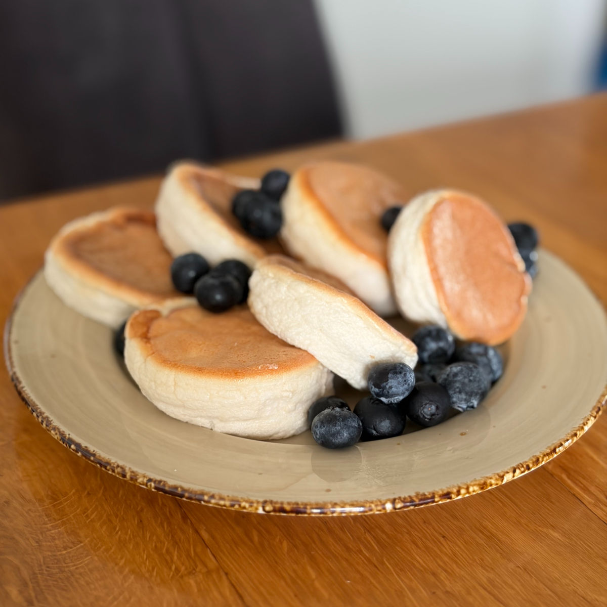
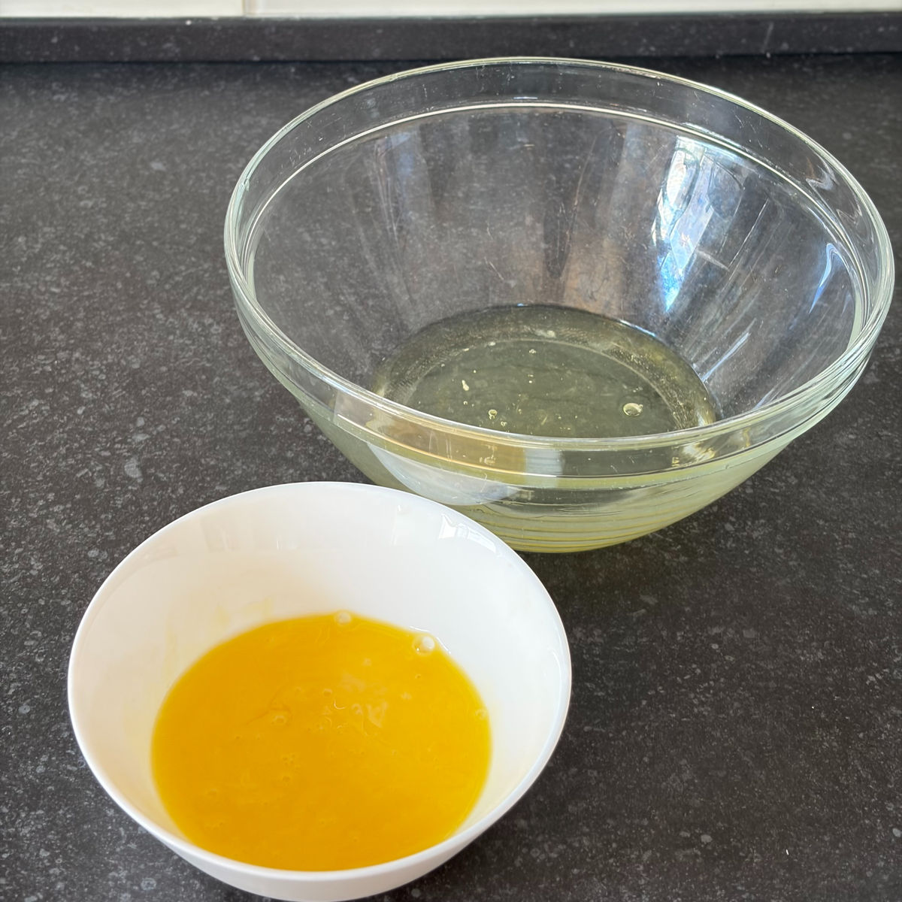
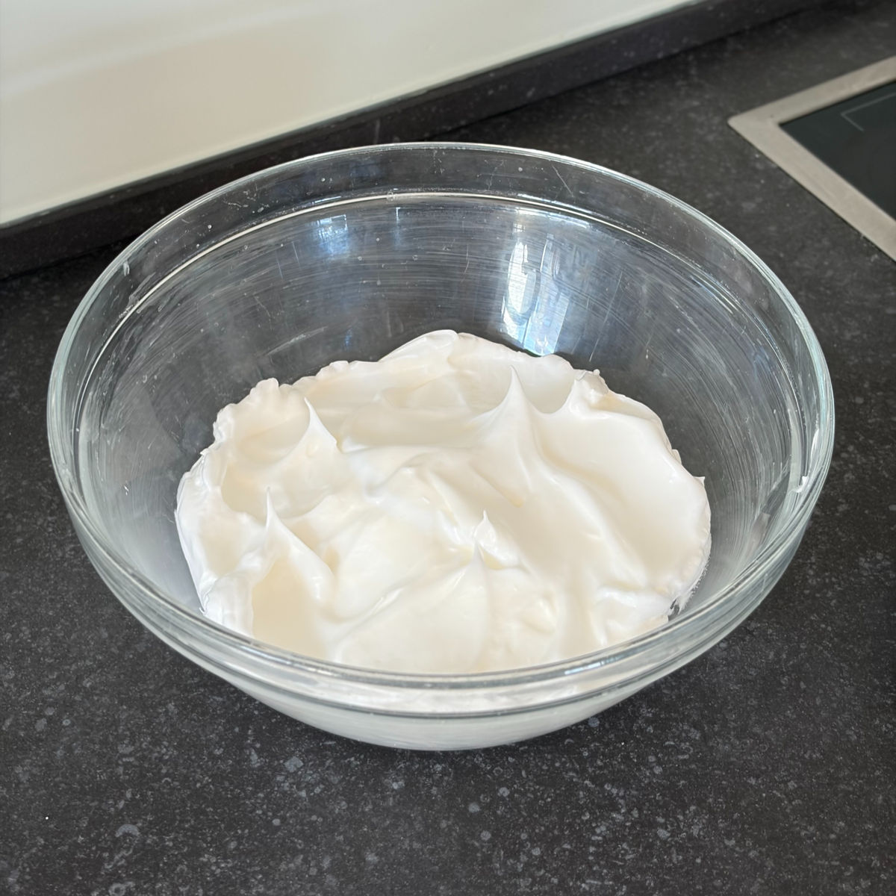
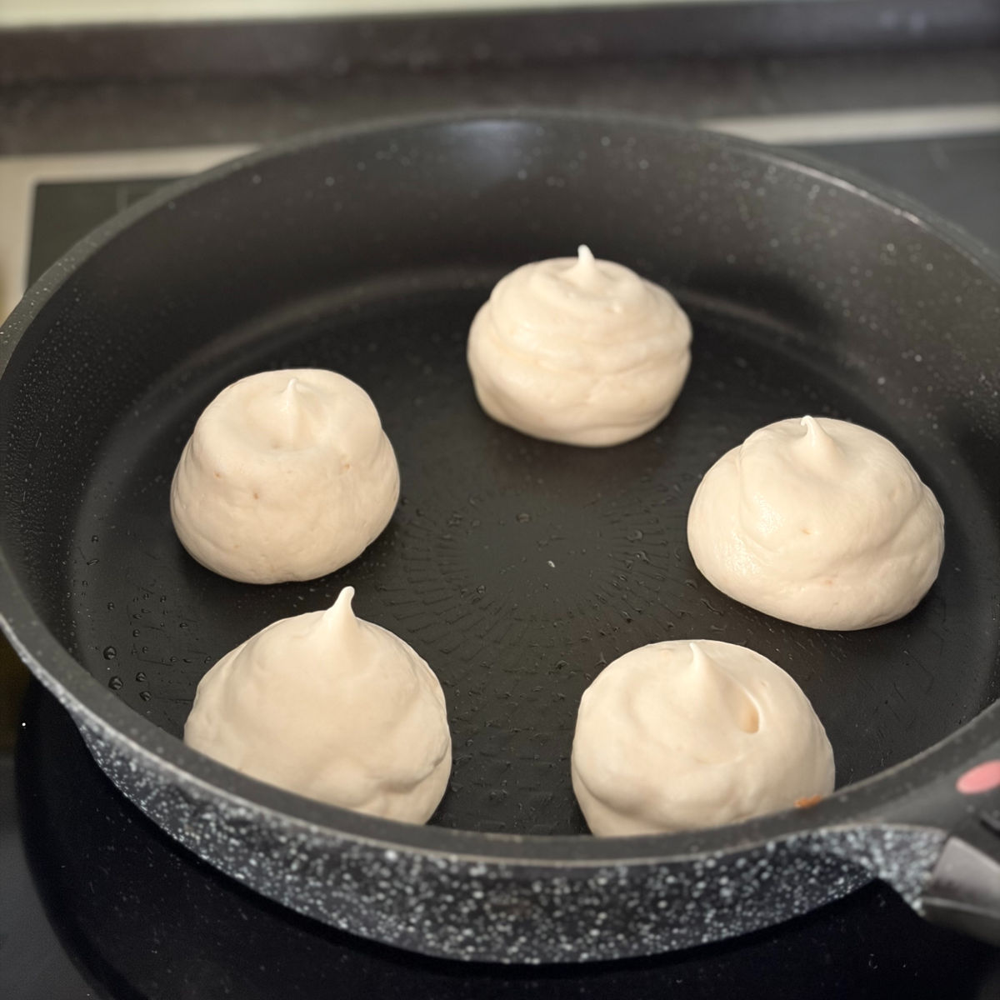
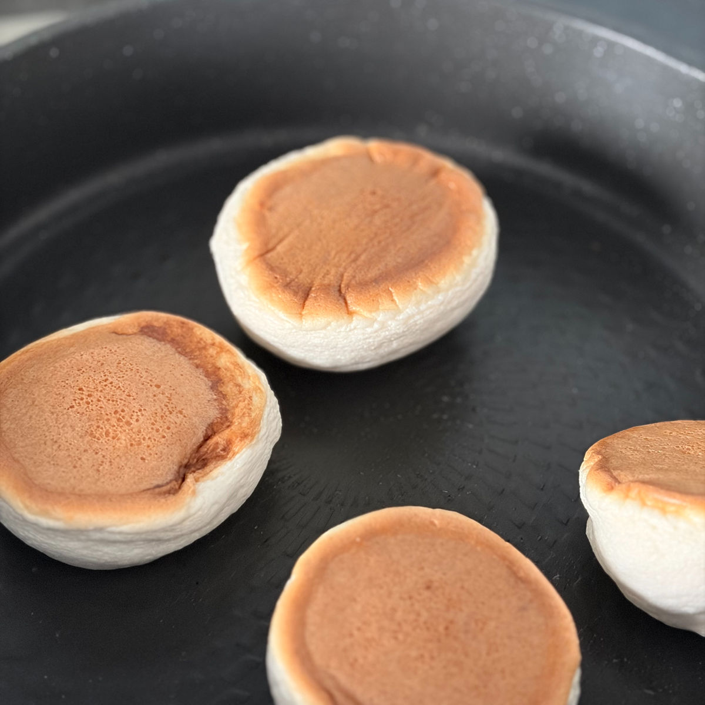

פנקייקים אווריריים בסגנון יפני
עודכן: 24 באפר׳
טבלת ערכים תזונתיים בקירוב:
שימו לב שזו טבלה עבור ממתיק סוויטאנגו וקמח שקדים (הקמח עם 9.1 גרם פחמימה ל100 ) , אבקת חלבון במקום קמח שקדים תוריד את כמות הקלוריות ותעלה את כמות החלבון במתכון.
| ערכים | פנקייק (20 גרם) | 100 גרם |
|---|---|---|
| קלוריות | 30 | 150 |
| פחמימות | 0.42 | 2.1 |
| חלבונים | 2 | 10.2 |
בנסיעה הקרובה ליפן אחד הקינוחים שאני הכי מחכה לטעום הוא את הפנקייקים. הפנקייקים היפניים הם אווריריים יפים ורכים. לכן החלטתי להנגיש אותם גם בגרסה הבריאה.
הרי מי יכול לסרב לבוקר מושלם עם פנקייקים לצד הקפה :)

המתכון:
כמות: כ-10 פנקייקים
חשוב לדעת:
המתכון מאפשר לכם לבחור בין אבקת חלבון לבין קמח שקדים, כאשר בשני המקרים תקבלו פנקייק אוורירי וטעים מאוד. עם זאת, ישנו הבדל בין השניים:
לתוצאה יציבה וגבוהה (כמו בתמונה למעלה): שימוש באבקת חלבון עוזר לפנקייק לשמור על הגובה המקסימלי שלו גם לאחר ההוצאה מהמחבת.
שימוש בקמח שקדים יניב תוצאה דומה מאוד בטעם ובאווריריות, אך הפנקייק נוטה להצטמצם הרבה יותר בגובה לאחר ההכנה (תמונת השער של המתכון היא עם קמח שקדים).
לסיכום: אם גובה זה מה שחשוב לכם השתמשו באבקת חלבון ולא בקמח שקדים, ואם הגובה הוא לא מה שקריטי לכם השתמשו בקמח שקדים.
מרכיבים:
3 ביצים- 2 חלמונים ו- 3 חלבונים
1 כפית חומץ
15 גרם אבקת חלבון \ 20 גרם קמח שקדים (אם אבקת החלבון שלכם ממותקת יש להפחית בכמות הממתיק)
25 גרם סוויטאנגו \ 30 גרם דבש (שימו לב: דבש אינו מתאים לסוכרתיים ולקיטוגנים)
20 מ"ל (כף + כפית) חלב שקדים \ חלב צמחי אחר \ חלב רגיל - במידה ומשתמשים בקמח שקדים שימו רק כף אחת של חלב (15 מ"ל בלבד ולא 20)
תמצית וניל
הוראות הכנה:
מפרידים את החלמונים והחלבונים. חשוב מאוד שלא יחדור חלמון לקערת החלבונים !
מקציפים את החלבונים עם הממתיק (לא משנה דבש או סוויטאנגו) וכפית החומץ.
מערבבים בקערה נפרדת 2 חלמונים, אבקת חלבון \ קמח שקדים, חלב ותמצית וניל.
רק כאשר קציפת החלבונים הפכה לקצף לבן, מבריק ויציב מעבירים כף ממנה אל תערובת החלמונים ומקפלים פנימה.
שופכים את תערובת החלמונים לקציפת החלבונים ומקפלים בעדינות.
מעבירים את התערובת לשק זילוף. אם אין, אפשר לזלף עם כף.
מחמים מחבת על חום נמוך ומשמנים אותה.
מזלפים תלוליות עבות בגובה של כ 4-5 ס"מ (יש תמונות לדוגמה בסוף המתכון) על גבי המחבת ומוסיפים כפית מים כדי לייצר אדים, מכסים במכסה.
מטגנים כמה דקות עד שהתחתית נהיית שחומה, הופכים את הפנקייק ומחסים שוב. שימו לב שלאחר סיום הטיגון הפנקייקים מתכווצים מעט ויורדים בגובה, זה תקין.
מחכים כמה דקות ומורידים מהאש, בתיאבון!
הערות:
במידה ומעדיפים ניתן לעשות את הפנקייקים גם שטוחים יותר פשוט עושים תלולית קטנה יותר למרות שלאחר הטיגון הפנקקיקים קצת יורדים בנפחם בעיקר אם משתמשים בקמח שקדים שהוא קצת כבד.
אפשרויות טעימות לתוספות לצד הפנקייק: פירות יער, בננה, ריקוטה, שמנת חמוצה, יוגורט יווני, דבש או מייפל, ריבה, ממרח שוקולד, חמאת שקדים.
ניתן לקשט גם עם ריבת פירות יער בהכנה ביתית, יש לי פה באתר מתכון לכמה ריבות דלות בקלוריות ובפחמימות:
ריבות שונות מפירות יער בפחות מ-30 דקות
במידה ורוצים מתכון עם כמות חלבון גדולה יותר, ניתן לעשות זאת. במצב כזה הפרידו את הביצים, תשתמשו ב- 3 חלמונים בבלילת החלמונים (משמע השתמשו בשלושת הביצים). לבלילת החלמונים הוסיפו סקופ חלבון (כ- 30 גרם אבקה) והוסיפו כ 3 כפות חלב.
סרטון מתהליך ההכנה:
לינק לסרטון קצר
תמונות מתהליך ההכנה:

הפרדת החלמונים והחלבונים

הקצפת תערובת החלבונים

הכנת תלוליות מהבלילה

תהליך הטיגון